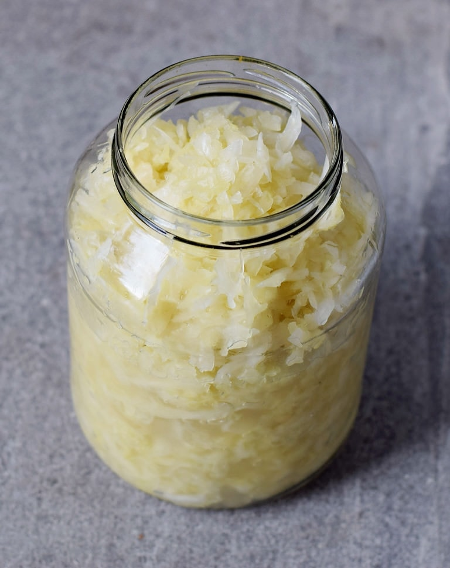

Sauerkraut

Ingredients
- 1 head of cabbage
- kosher salt
Equipment
- Mason jar with lid
- gram scale
Instructions
- Cut cabbage in quarters and remove core
- thinly slice cabbage
- measure 2% of cabbage weight in salt
- add salt and cabbage together in mixing bowl and massage until brine forms in bowl
- add cabbage and salt to clean mason jar and tamp down to brine is completely covering cabbage. You may have to weigh down cabbage to ensure in stays submerged
- apply lid loosly
- wait 10-14 days
return home